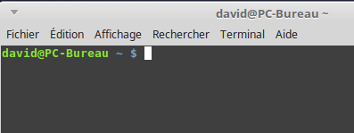
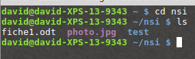
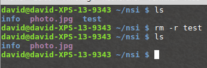
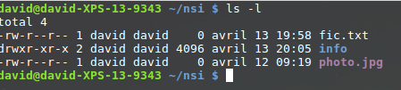

Cours
1) la ligne de commande
À la "préhistoire" des systèmes d'exploitation, ces derniers étaient dépourvus d'interface graphique (système de fenêtres "pilotables" à la souris), toutes les interactions "système d'exploitation - utilisateur" se faisaient par l'intermédiaire de "lignes de commandes" (suites de caractères, souvent ésotériques, saisies par l'utilisateur). Aujourd'hui, même si les interfaces graphiques modernes permettent d'effectuer la plupart des opérations, il est important de connaitre quelques-unes de ces lignes de commandes.
Pour saisir des lignes de commandes, nous allons utiliser une console (aussi appelé terminal même si ce n'est pas exactement la même chose).

Nous avons ci-dessus la console de l'utilisateur "david" qui utilise un ordinateur qui se nomme "PC-Bureau" ("david@PC-Bureau").
2) arborescence du système de fichier
a) introduction
Principalement nous allons, grâce à la ligne de commande, travailler sur les fichiers et les répertoires. Dans les systèmes de type "UNIX" (par exemple GNU/Linux ou macOS), nous avons un système de fichier en arborescence :

Dans le schéma ci-dessus on trouve des répertoires (noms entourés d'un rectangle, exemple : "home") et des fichiers (uniquement des noms "grub.cfg"). À noter : les extensions des noms de fichiers, par exemple le "cfg" de "grub.cfg", ne sont pas obligatoires dans les systèmes de type "UNIX", par exemple, "bash" est bien un nom de fichier et il n'a pas d'extension.
On parle d'arborescence, car ce système de fichier ressemble à un arbre à l'envers.
Comme vous pouvez le constater, la base de l'arbre s'appelle la racine de l'arborescence et se représente par un "/"
b) chemin absolu ou chemin relatif ?
Pour indiquer la position d'un fichier (ou d'un répertoire) dans l'arborescence, il existe 2 méthodes : indiquer un chemin absolu ou indiquer un chemin relatif. Le chemin absolu doit indiquer "le chemin" depuis la racine. Par exemple le chemin absolu du fichier fiche.ods sera : /home/elsa/documents/fiche.ods
Remarquez que nous démarrons bien de la racine / (attention les symboles de séparation sont aussi des /)
Il est possible d'indiquer le chemin non pas depuis la racine, mais depuis un répertoire quelconque, nous parlerons alors de chemin relatif :
Le chemin relatif permettant d'accéder au fichier "photo_1.jpg" depuis le répertoire "max" est : "images/photo_vac/photo_1.jpg"
Remarquez l’absence du / au début du chemin (c'est cela qui nous permettra de distinguer un chemin relatif et un chemin absolu).
Imaginons maintenant que nous désirions indiquer le chemin relatif pour accéder au fichier "gdbd_3.jpg" depuis le répertoire "photos_vac".
Comment faire ?
Il faut "remonter" d'un "niveau" dans l'arborescence pour se retrouver dans le répertoire "images" et ainsi pouvoir repartir vers la bonne "branche". Pour ce faire il faut utiliser 2 points : ..
"../ski/gdbd_3.jpg"
Il est tout à fait possible de remonter de plusieurs "crans" : "../../" depuis le répertoire "photos_vac" permet de "remonter" dans le répertoire "max"
Comme déjà évoqué plus haut, les systèmes de type "UNIX" sont des systèmes "multi-utilisateurs" : chaque utilisateur possède son propre compte. Chaque utilisateur possède un répertoire à son nom, ces répertoires personnels se situent traditionnellement dans le répertoire "home". Dans l'arborescence ci-dessus, nous avons 2 utilisateurs : "max" et "elsa". Par défaut, quand un utilisateur ouvre une console, il se trouve dans son répertoire personnel. Dans l'image de la console ci-dessus, nous avons un david@PC-Bureau ~ $ (au passage, on appelle cela "l'invite de commande"), le "~" (caractère "tilde") signifie que l'on se trouve actuellement dans le répertoire personnel de l'utilisateur courant, autrement dit dans le répertoire de chemin absolu "/home/david" (puisque l'utilisateur courant est "david"). Le répertoire "où l'on se trouve actuellement" est appelé "répertoire courant". L'invite de commande vous indique à tout moment le répertoire courant : david@PC-Bureau ~/Documents $ vous indique que vous êtes dans le répertoire "Documents" qui se trouve dans le répertoire "david" qui se trouve dans le répertoire "home" (chemin absolu : "/home/david/Documents")
Attention : les systèmes de type "UNIX" sont "sensibles à la casse" (il faut différencier les caractères majuscules et les caractères minuscules) : le répertoire "Documents" et le répertoire "documents" sont 2 répertoires différents.
Il est important de savoir que si le double point ("../") permet de remonter d'un cran dans l'arborescence, le simple point "./" représente le répertoire courant. Si vous vous trouvez dans le répertoire "home" un "./document" représente le répertoire "document" qui se trouve dans le répertoire "home".
3) les commandes pour manipuler les fichiers et les répertoires
a) la commande cd
La commande cd permet de changer le répertoire courant (cd => change directory). Il suffit d'indiquer le chemin (relatif ou absolu) qui permet d'atteindre le nouveau répertoire.
Par exemple (en utilisant l'arborescence ci-dessous) :
-
si le répertoire courant est le répertoire "elsa" et que vous "voulez vous rendre" dans le répertoire "documents", il faudra saisir la commande : cd documents (relatif) ou cd /home/elsa/documents (absolu)
-
si le répertoire courant est le répertoire photos_vac et que vous "voulez vous rendre" dans le répertoire ski, il faudra saisir la commande : cd ../ski (relatif) ou cd /home/max/images/ski (absolu)
-
si le répertoire courant est le répertoire boulot et que vous "voulez vous rendre" dans le répertoire documents, il faudra saisir la commande : cd .. (relatif) ou cd /home/elsa/documents (absolu)
b) la commande ls
La commande ls permet de lister le contenu du répertoire courant.

Dans l'exemple ci-dessus, depuis le répertoire personnel de l'utilisateur david, nous passons dans le répertoire nsi à l'aide d'un cd nsi, puis nous affichons le contenu de ce répertoire nsi à l'aide de la commande ls. Nous trouvons dans le répertoire nsi : 2 fichiers (fiche1.odt et photo.jpg) et un répertoire (test).
c) la commande pwd
La commande pwd permet de connaitre le répertoire courant (permet d'afficher le chemin d'accès vers le répertoire courant depuis la racine)
d) La commande mkdir
La commande mkdir permet de créer un répertoire dans le répertoire courant. La commande est de la forme mkdir nom_du_répertoire

Remarque : il est préférable de ne pas utiliser de caractères accentués dans les noms de répertoire (ou de fichier). Il en est de même pour les espaces (à remplacer par des caractères tirets bas "_")
e) La commande rm
La commande rm permet de supprimer un fichier ou un répertoire. La commande est de la forme rm nom_du_répertoire_ou_nom_du_fichier

La plupart des commandes UNIX peuvent être utilisées avec une ou des options. Par exemple, pour supprimer un répertoire non vide, il est nécessaire d'utiliser la commande rm avec l'option -r : rm -r nom_du_répertoire

En fait l'option -r permet de supprimer un répertoire et ses sous répertoire.
ATTENTION : cette commande est relativement "dangereuse", il faut donc la manipuler prudemment. Par exemple la commande rm efface tous les fichiers du répertoire courant (le * signifie tous les fichiers et tous les répertoires). Pour effacer tous les fichiers et tous les répertoires présents dans le répertoire courant il faut donc utiliser rm -r **
f) La commande touch
La commande touch permet de créer un fichier vide. La commande est de la forme touch nom_du_fichier_à_créer

g) La commande cat
La commande cat permet d'afficher dans la console le contenu d'un fichier.
Soit un fichier toto.txt. Si à l'aide d'un éditeur de texte vous avez saisi coucou dans le fichier toto.txt, la commande cat toto.txt affichera coucou dans la console.
h) La commande cp
La commande cp permet de copier un fichier. La commande est de la forme cp /répertoire_source/nom_fichier_à_copier /répertoire_destination/nom_fichier

i) La commande mv
La commande mv (move) permet de déplacer un fichier dans un dossier. Par exemple un mv toto.txt titi déplacera le fichier toto.txt dans le répertoire titi (attention on parle bien de déplacement pas de copie).
j) La commande man
La commande man permet d'obtenir la documentation d'une autre commande. Par exemple, man ls vous donnera la documentation de la commande ls.
4) Gestion des utilisateurs et des groupes
Les systèmes de type "UNIX" sont des systèmes multi-utilisateurs, plusieurs utilisateurs peuvent donc partager un même ordinateur, chaque utilisateur possédant un environnement de travail qui lui est propre.
Chaque utilisateur possède certains droits lui permettant d'effectuer certaines opérations et pas d'autres. Le système d'exploitation permet de gérer ces droits très finement. Un utilisateur un peu particulier est autorisé à modifier tous les droits : ce "super utilisateur" est appelé "administrateur" ou "root". L'administrateur pourra donc attribuer ou retirer des droits aux autres utilisateurs. Au lieu de gérer les utilisateurs un par un, il est possible de créer des groupes d'utilisateurs. L'administrateur attribue des droits à un groupe au lieu d'attribuer des droits particuliers à chaque utilisateur.
Comme nous venons de le voir, chaque utilisateur possède des droits qui lui ont été octroyés par le "super utilisateur". Nous nous intéresserons ici uniquement aux droits liés aux fichiers, mais vous devez savoir qu'il existe d'autres droits liés aux autres éléments du système d'exploitation ((imprimante, installation de logiciels...).
Les fichiers et les répertoires possèdent 3 types de droits :
-
les droits en lecture (symbolisés par la lettre r) : est-il possible de lire le contenu de ce fichier
-
les droits en écriture (symbolisés par la lettre w) : est-il possible de modifier le contenu de ce fichier
-
les droits en exécution (symbolisés par la lettre x) : est-il possible d'exécuter le contenu de ce fichier (quand le fichier du code exécutable)
Il existe 3 types d'utilisateurs pour un fichier ou un répertoire :
-
le propriétaire du fichier (par défaut c'est la personne qui a créé le fichier), il est symbolisé par la lettre u
-
un fichier est associé à un groupe, tous les utilisateurs appartenant à ce groupe possèdent des droits particuliers sur ce fichier. Le groupe est symbolisé par la lettre g
-
tous les autres utilisateurs (ceux qui ne sont pas le propriétaire du fichier et qui n'appartiennent pas au groupe associé au fichier). Ces utilisateurs sont symbolisés la lettre "o"
Il est possible d'utiliser la commande ls avec l'option -l afin d'avoir des informations supplémentaires.

Prenons la première ligne :
-rw-r--r-- 1 david david 0 avril 13 19:58 fic.txt
Lisons cette ligne de gauche à droite :
-
le premier symbole "-" signifie que l'on a affaire à un fichier, dans le cas d'un répertoire, nous aurions un "d" (voir la 2e ligne)
-
les 3 symboles suivants "rw-"donnent les droits du propriétaire du fichier : lecture autorisée (r), écriture autorisée (w), exécution interdite (- à la place de x)
-
les 3 symboles suivants "r--"donnent les droits du groupe lié au fichier : lecture autorisée (r), écriture interdite (- à la place de w), exécution interdite (- à la place de x)
-
les 3 symboles suivants "r--"donnent les droits des autres utilisateurs : lecture autorisée (r), écriture interdite (- à la place de w), exécution interdite (- à la place de x)
-
le caractère suivant "1" donne le nombre de liens (nous n'étudierons pas cette notion ici)
-
le premier "david" représente le nom du propriétaire du fichier
-
le second "david" représente le nom du groupe lié au fichier
-
le "0" représente la taille du fichier en octet (ici notre fichier est vide)
-
"avril 13 19:58" donne la date et l'heure de la dernière modification du fichier
-
"fic.txt" est le nom du fichier
Prenons la deuxième ligne :
drwxr-xr-x 2 david david 4096 avril 13 20:05 info
Lisons cette ligne de gauche à droite :
-
le premier symbole "d" signifie que l'on a un répertoire
-
les 3 symboles suivants "rwx"donnent les droits du propriétaire du répertoire : lecture du contenu du répertoire autorisée (r), modification du contenu du répertoire autorisée (w), il est possible de parcourir le répertoire (voir le contenu du répertoire) (x)
-
les 3 symboles suivants "r-x"donnent les droits du groupe lié au répertoire : modification du contenu du répertoire interdite (- à la place de w)
-
les 3 symboles suivants "r-x"donnent les droits des autres utilisateurs : modification du contenu du répertoire interdite (- à la place de w)
-
le caractère suivant "2" donne le nombre de liens (nous n'étudierons pas cette notion ici)
-
le premier "david" représente le nom du propriétaire du répertoire
-
le second "david" représente le nom du groupe lié au répertoire
-
le "4096" représente la taille du répertoire en octets
-
"avril 13 20:05" donne la date et l'heure de la dernière modification du contenu du répertoire
-
"info" est le nom du répertoire
Il est important de ne pas perdre de vu que l'utilisateur root a la possibilité de modifier les droits de tous les utilisateurs.
Le propriétaire d'un fichier peut modifier les permissions d'un fichier ou d'un répertoire à l'aide de la commande chmod. Pour utiliser cette commande, il est nécessaire de connaitre certains symboles :
-
les symboles liés aux utilisateurs : "u" correspond au propriétaire, "g" correspond au groupe lié au fichier (ou au répertoire), "o" correspond aux autres utilisateurs et "a" correspond à "tout le monde" (permet de modifier "u", "g" et "o" en même temps)
-
les symboles liés à l'ajout ou la suppression des permissions : "+" on ajoute une permission, "-" on supprime une permission, "=" les permissions sont réinitialisées (permissions par défaut)
-
les symboles liés aux permissions : "r" : lecture, "w" : écriture, "x" : exécution.
La commande chmod à cette forme :
chmod [u g o a] [+ - =] [r w x] nom_du_fichier
par exemple
chmod o+w toto.txt
attribuera la permission "écriture" pour le fichier "toto.txt" "aux autres utilisateurs"
Il est possible de combiner les symboles :
chmod g-wx toto.txt
La commande chmod ci-dessus permet de supprimer la permission "écriture" et la permission "exécution" pour le fichier toto.txt "au groupe lié au fichier"
Une fois de plus, "root" a tous les droits sur l'ensemble des fichiers et des répertoires, il peut donc utiliser la commande chmod sur tous les répertoires et tous les fichiers.